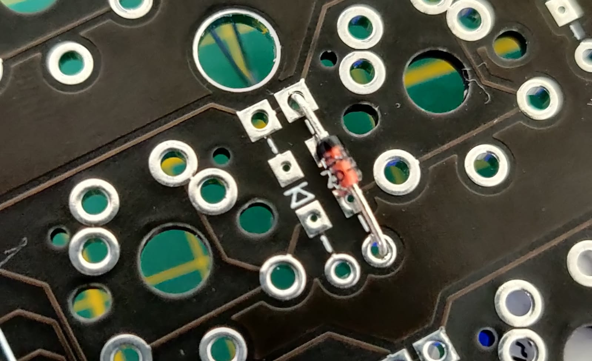
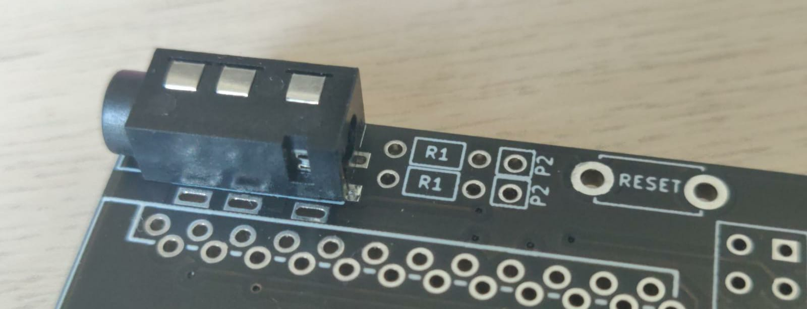
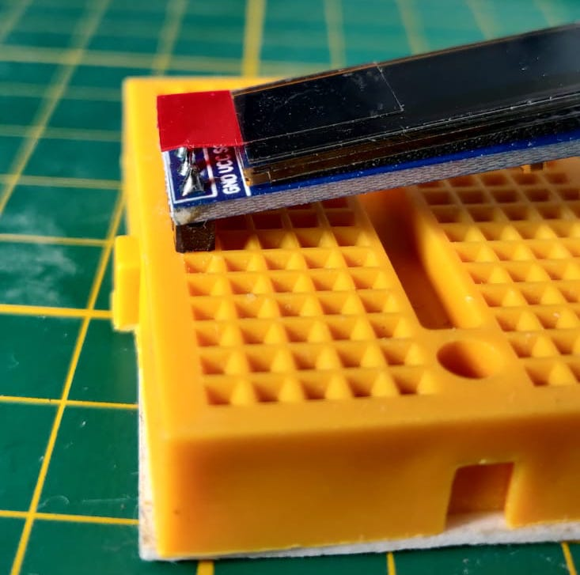
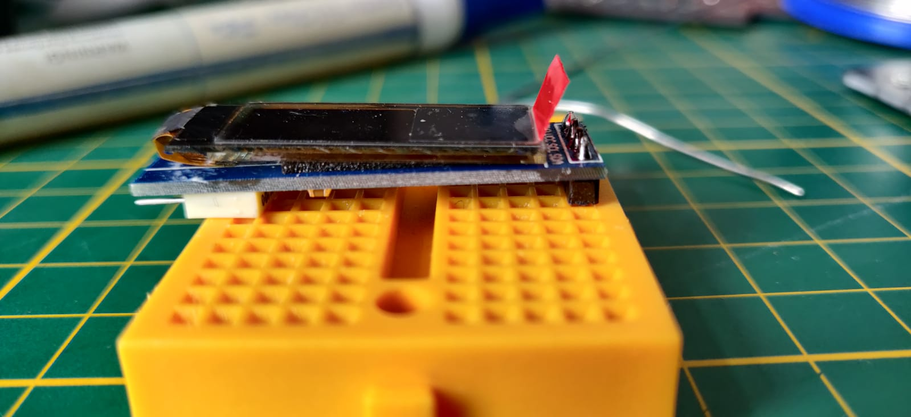

Soldering¶
The pcb’s we’re going to be soldering are identical. One needs to be flipped to make up the other side. Make sure you only solder on one side.
Diodes¶
The general rule in soldering is small components first. In our case this means we start with the 58 diodes. A diode needs to be soldered on every ->|- sign. The black part of your diode is the cathode and in our case should be facing up to the square pad. In our case all the arrows point upwards, so all diodes should be facing with the black part towards the top.
As you can see in the image there are 4 pads for each diode. The two inner pads are used for smd diodes. We have trough hole diodes so we use the outer ones. Flip the pcb over after inserting the diode and solder the two legs.
Reset switch, TRRS jack¶
After soldering all the diodes, it’s time to solder the reset switch and the trrs jack. Insert them into the marked spot, flip the pcb over and solder the legs.
Arduino¶
For the arduino it’s very important that you solder it in the right place. Insert the short side of the headers pins into the box marked the pcb. Place the arduino on top with the usb port facing down to the pcb and solder all the pins to the pcb. Soldering with the arduino in place makes sure you use the right pins and prevents crooked headers.
Switches¶
Soldering the switches is very straight forward. Just don’t forget the mounting plate Insert the switches through the mounting plate on to your pcb and solder on the other side.
OLED display¶
We solder the display last because it’s quite fragile and only soldered on one point. My display came with the pins soldered on crooked. I fixed this by sticking the display in a breadboard and putting an object the size of the header plastic between the breadboard and the display. I then heated the solder while lightly pressing down.
 {kind=link}
{kind=link}
Insert the display through the 4 holes at the bottom of the Pro Micro. Solder on the other side. Make sure you keep the display straight while soldering. There might be a gap between the pcb and the plastic of the header.